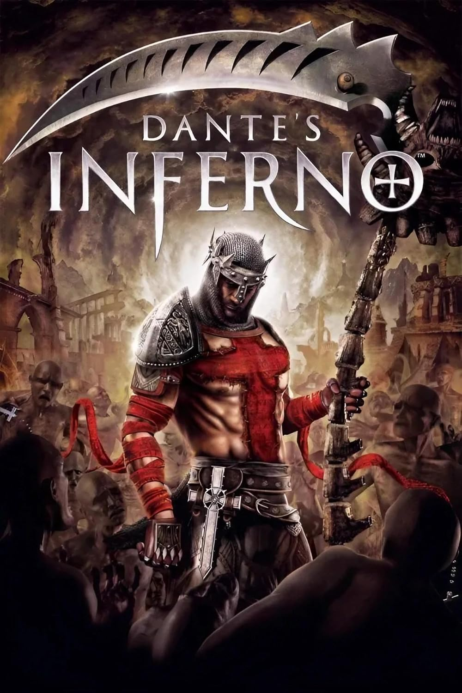

Videojuegos Favoritos
Los videojuegos me gustan porque son una manera de desconectarme del día a día y al mismo tiempo vivir experiencias diferentes. Cada juego tiene su propio mundo, sus reglas y su historia, y eso hace que siempre haya algo nuevo por descubrir. Además, no solo se trata de pasar el rato, también te retan a pensar, a mejorar y hasta a trabajar en equipo cuando juegas con otros. En cierto modo, es una forma de divertirme mientras aprendo y me relajo al mismo tiempo.
Entonces estos son mis 3 juegos preferidos
1. Hollow Knight
Un metroidvania de exploración en un mundo oscuro y misterioso lleno de insectos y criaturas. Destaca por su jugabilidad precisa, ambientación melancólica y dificultad desafiante.

2. Dantes Inferno
Un hack and slash inspirado en La Divina Comedia. Acompañas a Dante en su viaje por los nueve círculos del infierno enfrentando demonios y jefes grotescos, con una estética intensa y cargada de simbolismo religioso.
3. Blasphemous
Un metroidvania con toques de soulslike, ambientado en un mundo sombrío inspirado en el arte y la religión española. Combina acción brutal, escenarios inquietantes y una atmósfera cargada de penitencia y sufrimiento.